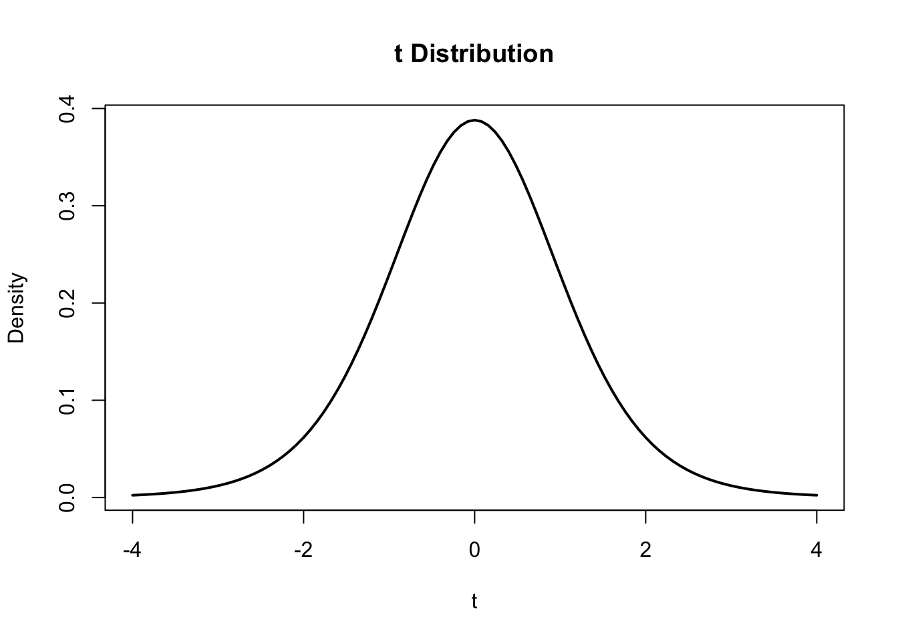

curve(
dt(x, df = 9),
from = -4,
to = 4,
lwd = 2,
xlab = "t",
ylab = "Density",
main = "t Distribution"
)
So far, the focus has been on describing observed data and modeling uncertainty. Descriptive statistics summarize the data we actually observe. Probability distributions describe how uncertain outcomes behave. Statistical inference takes the next step: what can a sample tell us about a population we cannot fully observe?
Suppose a company reports:
Average household spending last month was $1,793.
That number may sound precise, but suppose it came from a sample of 2,500 households rather than every household. The sample mean \(\bar{x} = 1793\) is known, but the population mean \(\mu\) is unknown.
The goal of statistical inference is to use the observed sample statistic to learn about the unknown population parameter, while explicitly accounting for sampling uncertainty.
The general process is:
\[\text{Population} \rightarrow \text{Sample} \rightarrow \text{Statistic} \rightarrow \text{Inference about Parameter}\]
There are two major tools for doing this:
Before either one works, however, we need to understand sampling variability.
A sample is a subset of a population that you actually observe or collect data from. The goal is usually to use information from the sample to learn about the population. This connects to statistics vs. parameters (see Section 1).
Common sources of bias:
\[\boxed{\text{Coverage}=\text{Who can be reached}} \boxed{\text{Selection}=\text{Who gets selected}} \boxed{\text{Nonresponse}=\text{Who actually responds}}\]
Sampling Methods
Suppose you drew a different random sample of 2,500 households and recomputed the average spend each time, 1000 times. What would the distributions of those averages be? How would that be different from the the distribution of the raw values themselves?
The sampling distribution is the distribution of a statistic (e.g., \(\bar{X}\)) across all possible repeated samples of the same size from a population.
If \(E(\bar X) = \mu\), \(\bar{X}\) is an unbiased estimator of \(\mu\), the true value (in this case the mean).
For sample mean: \(SE(\bar{X})=\frac{\sigma}{\sqrt{n}}\) where smaller SE (standard error) means less sample-to-sample variability.
Standard Error measures how much a statistic would typically vary from sample to sample.
The central limit theorem says as the sample size, \(n\), gets larger, the sampling distribution of the sample mean, \(bar{X}\) becomes approximately normal, regardless of the shape of the population distribution.
*Rule of thumb, \(n \geq 30\) is often “large enough” though more skew may require a larger \(n\).
The CLT allows us to build confidence intervals and hypothesis tests even when the raw data isn’t normal.
When trying to estimate the mean of a population, we use a point estimate for the mean \(\bar{X}\).
A point estimate is a single value calculated from a sample that is used to estimate an unknown population parameter.
When doing interference, the true standard deviation, \(\sigma\), is unknown. Because of this, we use the t-distribution to model it (\(t_{n-1}\)).
\[\bar{X} \pm t_{\alpha/2,\;n-1}\frac{s}{\sqrt{n}}\] Where:
Interpretation: the procedure covers \(\mu\) in \(100(1-\alpha)%\) of repeated samples. e.g. We are 95% confident that the mean is within…
curve(
dt(x, df = 9),
from = -4,
to = 4,
lwd = 2,
xlab = "t",
ylab = "Density",
main = "t Distribution"
)
A t-statistic is like a z-statistic when the population standard deviation \(\sigma\) is unknown and must be estimated using \(s\).
| \(z\) | \(t\) | |
|---|---|---|
| Distribution | Standard normal \(N(0,1)\) | \(t\)-distribution |
| Population SD \(\sigma\) | Known | Unknown |
| Standard error | \(\frac{\sigma}{\sqrt{n}}\) | \(\frac{s}{\sqrt{n}}\) |
| Degrees of freedom | None | \(n-1\) |
| Shape | Normal | Normal-like, heavier tails |
| Critical value for 95% | \(1.96\) | Depends on \(df\) |
| Common use for means | Less common | Most common |
As \(n\) gets larger, the difference between \(t\) and \(z\) becomes smaller and eventually negligible because \(s\) becomes a more precise estimate of \(\sigma\).
Helpful Definitions:
\(H_0 \rightarrow\) the Null Hypothesis: the baseline/default claim. \(H_a \rightarrow\) the Alternative Hypothesis: what we are looking for evidence of (represents a difference/effect/change from null)
Steps: hypothesis \(\rightarrow\) significance level \(\alpha\) test statistic \(\rightarrow\) \(p-value\) \(\rightarrow\) decision \(\rightarrow\) conclusion
| Error | What Happens | Probability | Think |
|---|---|---|---|
| Type I | Reject a true \(H_0\) | \(\alpha\) | False positive |
| Type II | Fail to reject a false \(H_0\) | \(\beta\) | False negative |
A one-sided t-test tests whether a population mean is larger than or smaller than a hypothesized value, depending on the specified direction.
Reject \(H_0\) when: \(p\text{-value} \leq \alpha\)
Inference for a proportion uses essentially the same inference framework as inference for a mean, but the population parameter changes.
For means, the population parameter is: \(\mu = \text{population mean}\)
For proportions, the population parameter is: \(p = \text{population proportion}\)
Same inference process, new parameter.
| Mean \(\mu\) | Proportion \(p\) | |
|---|---|---|
| Point Estimate | \(\bar{X}\) | \(\hat{p}\) |
| Standard Error | \(\frac{s}{\sqrt{n}}\) | \(\sqrt{\frac{\hat{p}(1-\hat{p})}{n}}\) |
| Reference Distribution | \(t_{n-1}\) | \(z\) (Normal) |
| Confidence Interval | \(\bar{X} \pm t_{\alpha/2,n-1} \cdot SE\) | \(\hat{p} \pm z_{\alpha/2} \cdot SE\) |
| Test Statistic (\(H_0\)) | \(\frac{\bar{X}-\mu_0}{s/\sqrt{n}}\) | \(\frac{\hat{p}-p_0}{\sqrt{p_0(1-p_0)/n}}\) |
For proportion inference, each observation is a binary outcome:
\(X_i = \begin{cases}1 & \text{success} \\ 0 & \text{failure} \end{cases}\)
Each observation follows a Bernoulli distribution:
\(X_i \sim \text{Bernoulli}(p)\) where \(p\) is the true population probability or proportion of success.